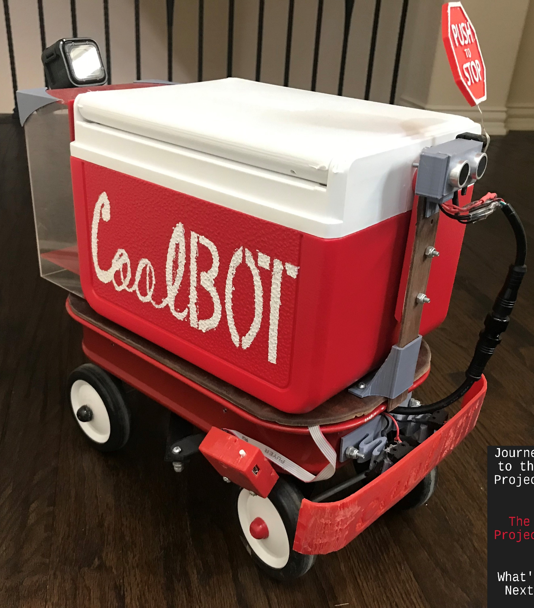

Coolbot


During my high school years, I undertook a challenging and innovative project by designing and developing an autonomous robot with the capability to navigate sidewalks reliably. The robot, built on a small wagon base, featured rear-wheel drive and front-wheel steering. One of the key functionalities of the robot was its autonomous navigation system, which relied on computer vision through a strategically positioned camera on the right side of the robot.
The vision system was designed to recognize the color of the sidewalk and based on the color a bounding box is produced, allowing the robot to autonomously adjust its position. If the camera detected that the sidewalk was too large, indicating a deviation to the left, the robot autonomously corrected its course by turning to the right, and vice versa. To ensure obstacle avoidance, the robot was equipped with an ultrasonic sensor and a bumper, promptly stopping if any obstruction was detected in its path.
In addition to its autonomous capabilities, the robot featured a button positioned at the top that allowed for a temporary halt, enabling users to pause the robot conveniently for tasks such as grabbing a drink from the cooler it carried. The incorporation of an encoder further enhanced the robot's performance, regulating its speed and ensuring smooth and controlled movement.
The successful testing of the robot in my neighborhood, where it covered roughly two miles autonomously with a fully loaded cooler, demonstrated not only reliability of the robotic system but also the practical applicability of the project. This experience underscores my passion for problem-solving through technology and my ability to bring creative and functional solutions to real-world challenges.